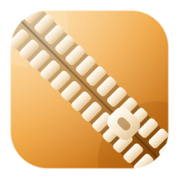

拖拽打开，即时预览，精准解压。XiZip 把经典的 7-Zip 内核装进一个暖色调毛玻璃界面，文件全程留在你的电脑上。

在熟悉的 7-Zip 之上，XiZip 把日常的打开、预览、解压、新建做成一件顺手的事。
文本、图片、PDF、音视频，双击直接在预览面板查看，不用先解压。代码文件自动高亮。
文件不上传、不外发、不采集。XiZip 在你电脑上起一个只监听 127.0.0.1 的本地服务。
解压全部，或只选几个文件。解压目录自动与压缩包同名，防止散落杂乱。支持随时取消。
新建压缩包有真实的进度条，一键取消会终止 7-Zip 并清走半成品，磁盘不留残渣。
MINI 专注拖拽与快速解压；MAX 提供完整的文件树、列表、预览三栏布局，多任务不慌乱。
琥珀渐变 + 径向光晕 + 细腻颗粒。明/暗主题一键切换，偏好写入本地配置文件。
共享同一套 Web 前端、同一套 HTTP 接口，界面与交互完全一致，只有打包方式不同。
由经典的 7-Zip 内核驱动，覆盖日常与专业场景。
不装不配置，安装即用。
从 123 网盘下载安装包，安装到任意目录，双击桌面XiZip for windows启动。
把 ZIP / 7Z / RAR 直接拖到窗口里，立即看到文件列表与压缩率。
双击文件内嵌预览；选好文件点解压，或一键全部落盘。